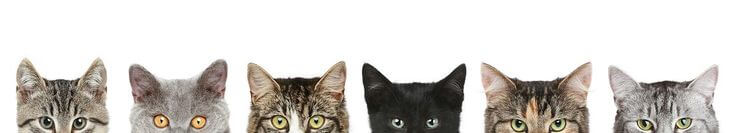
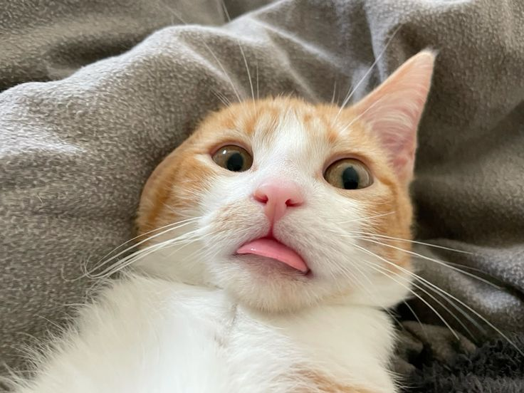
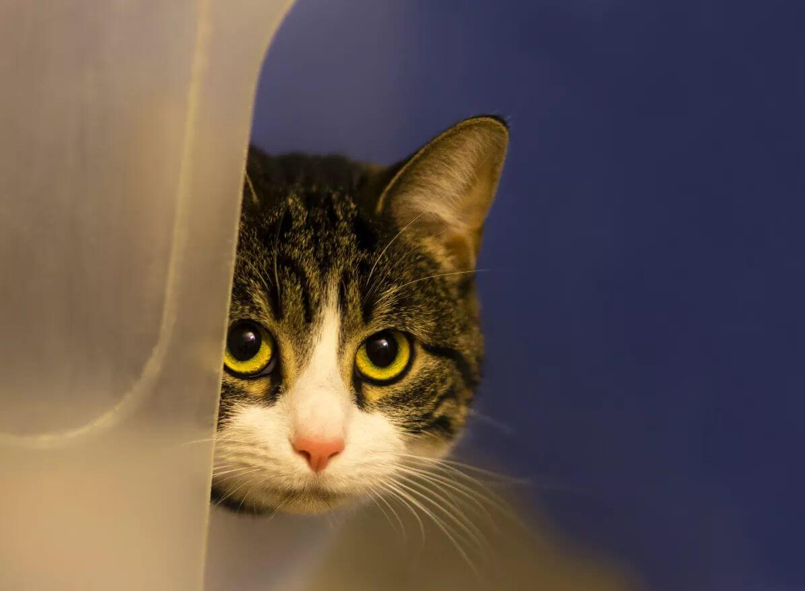
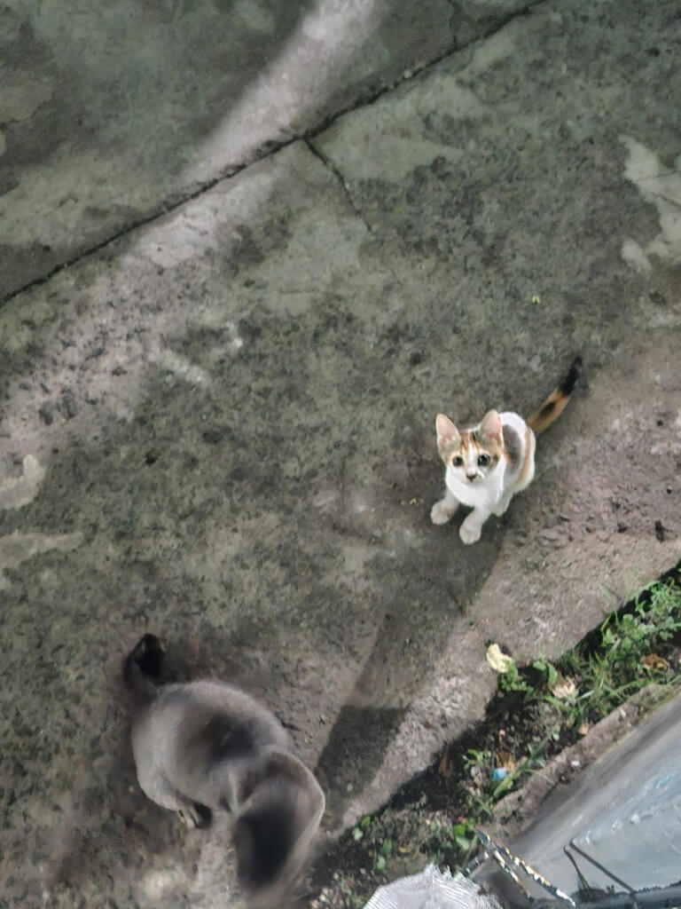
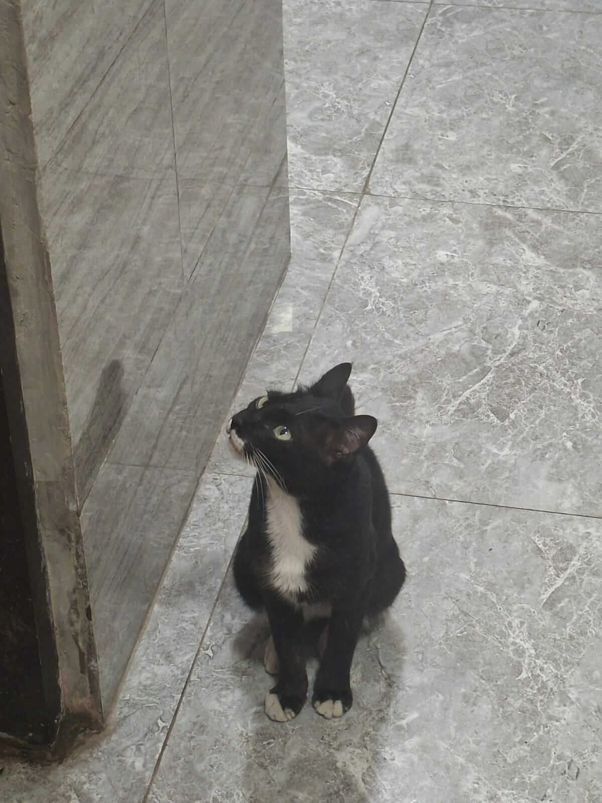
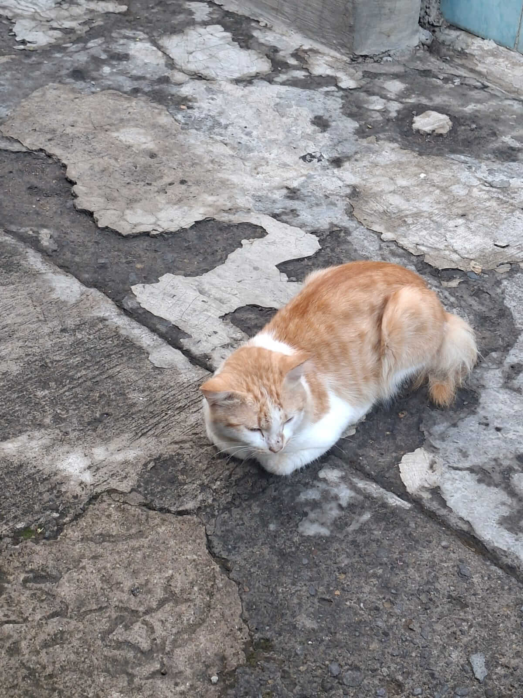
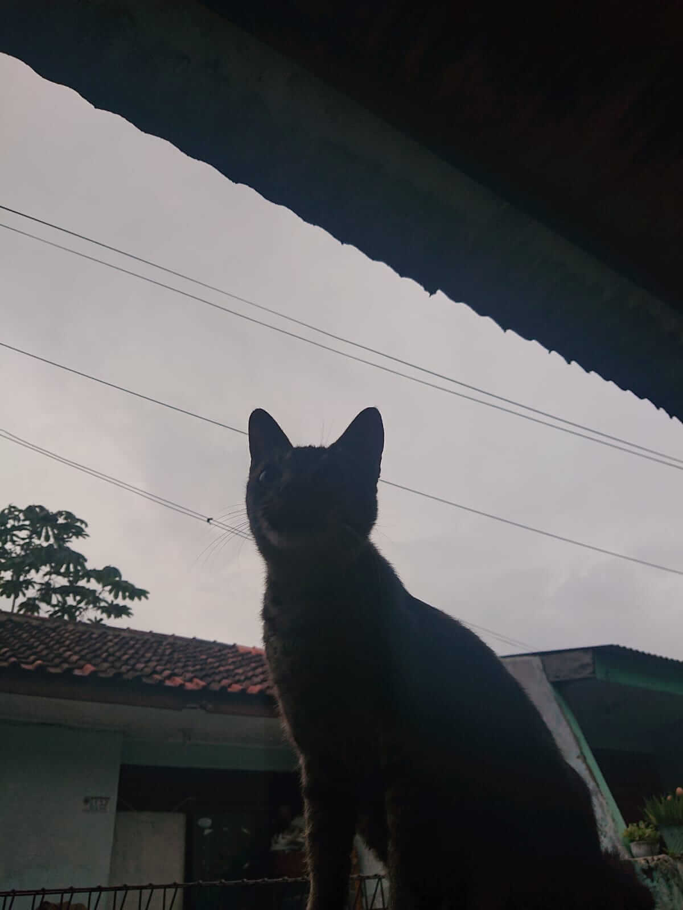
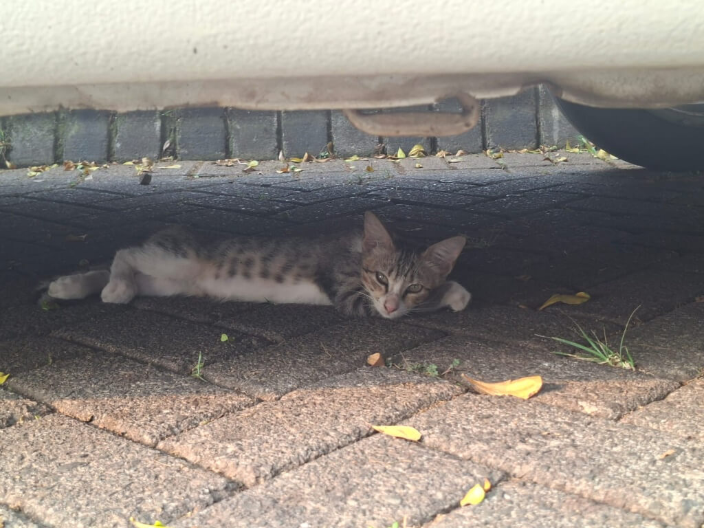
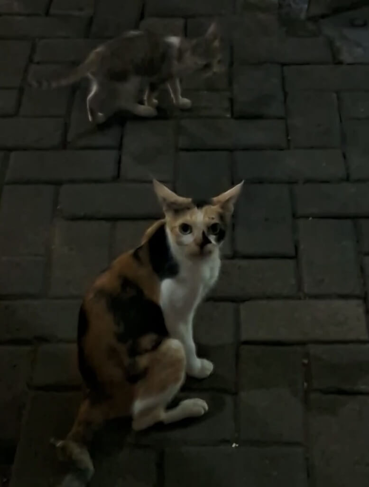
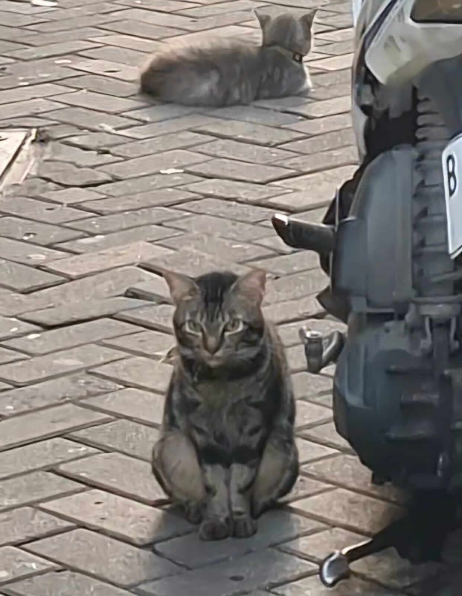

Selamat datang di Ruang Meong!
Tempat berbagi cerita tentang kucing sekitar Kita
Selamat Datang di Ruang Meong!
Ruang Meong merupakan tempat untuk mengenal,
melihat, dan membaca cerita tentang kucing-kucing yang
sering kita temui di lingkungan sekitar.

Cerita Terbaru

Si Oren yang Selalu Penasaran
Kucing oren sering terlihat aktif dan ingin tahu dengan keadaan sekitarnya.
selengkapnya disini

Yuk kenalan dengan Kucing Belang
Corak bulunya unik dan setiap kucing memiliki ciri khas masing-masing.
selengkapnya disini
Tempat Favorit untuk Tidur
Kucing sering memilih tempat yang tenang dan nyaman untuk beristirahat.
selengkapnya disini
Info
Info Ruang Meong
Website sederhana untuk mendokumentasikan keberadaan dan kebiasaan kucing di lingkungan sekitar kita.
Tentang
Ruang Meong adalah website sederhana yang dibuat
untuk tempat berbagi foto, informasi,
dan cerita tentang kucing-kucing yang ada di sekitar
lingkungan tempat tinggal.
Ide website ini muncul dari hal sederhana,
yaitu sering melihat kucing berkeliaran di sekitar rumah.
Setiap kucing memiliki bentuk, warna, dan kebiasaan
yang berbeda sehingga menarik untuk diamati.
Latar Belakang
Ruang Meong dibuat dari ketertarikan terhadap
kucing-kucing di lingkungan sekitar.
Website ini dikembangkan sebagai jurnal digital kecil
untuk menyimpan cerita dan foto mereka yang kalian temui.
Visi & Misi
Visi: Menjadi ruang website sederhana
untuk mengenal dan menghargai keberadaan kucing di lingkungan sekitar kita.
Misi:
- Mengumpulkan cerita tentang kucing sekitar.
- Membagikan foto kucing yang menarik.
- Mengajak pengunjung lebih peduli terhadap hewan.
Tujuan & Profil
Tujuan website ini adalah mendokumentasikan kucing sekitar
dan memberikan informasi ringan bagi pengunjung.
Pengelola: Fauziyyah Nurzahra
Bagian: Penulis cerita, pengelola galeri, dan pembuat website.
Galeri Kucing
Ini merupakan galeri dokumentasi kucing yang didapatkan di lingkungan sekitar.

Lico
ini si bocil kematian wkwk,
gak bisa diem banget, tapi dulu kalau
dengar langkah kaki manusia lewat aja
dia langsung panik dan ngacir ngumpet.
tapi akhir-akhir ini dia udah gak takut
lagi sih tiap aku lewat.
Malah sekarang suka nungguin depan pager bareng sama ibu nya

Margaret
Nah, ini mah si Margaret! kalian pasti udah pada tau kaan,
karna emang dia suka keliling di sekitar kampus. si margaret ini
bentukannya kaya rapi gitu ya wkwk, tapi hati hati yaa kalau
si margaret ini udah mulai nempel sama kamu, dia suka pipis sembarangan soalnya..

si gembul
kalau ini si gembul, Kucing orange-putih yang baru aku liat pertama kali di depan rumah
badannya ngelipat rapi banget sampai kelihatan kayak gumpalan roti wkwk.
Mukanya meram-melek kaya nahan ngantuk gitu,
karna emang masi pagi dia udah duduk didepan rumah aja.

mujaer
kalau yang ini suka hamil mulu tapi gak pernah jelas suaminya siapa..
tiap hilang terus ketemu lagi pasti lagi hamil,
trus anak-anaknya gak tahu pada ke mana dah T-T.
Nah, si lico ini tuh suka bareng dia terus,
jadi curiga kalau lico ini anaknya,
tapi kok warna bulunya beda jauh banget ya, apa bukan??

gepeng
gara gara liat posenya lucu, langsung reflek aku foto wkwk.
lucu banget lagi ngadem santai di kolong mobil sambil selonjoran
sampe badannya keliatan gepeng, jadi aku namain si gepeng

belang
pertama liat dia lagi susuin anak nya depan jalan,
tapi di usir sama kaka, dia jadi liatin begitu deh..
trus anaknya juga beda warna gitu, anak nya malah warna abu(?),
apa bapaknya yang abu ya..

si ucil
Nah, ini dia si kucing setia!
Kucing corak abu-hitam yang selalu nangkring tiap pagi pas aku mau berangkat kuliah.
duduknya gaya banget di samping ban motor gitu,
dia kaya lagi mastiin kalau aku udah berangkat atau belum wkwk
Ayo Kirim Foto Kucing Mu!!
Isi formulir berikut jika ingin berbagi kisah kucing yang kamu temui.